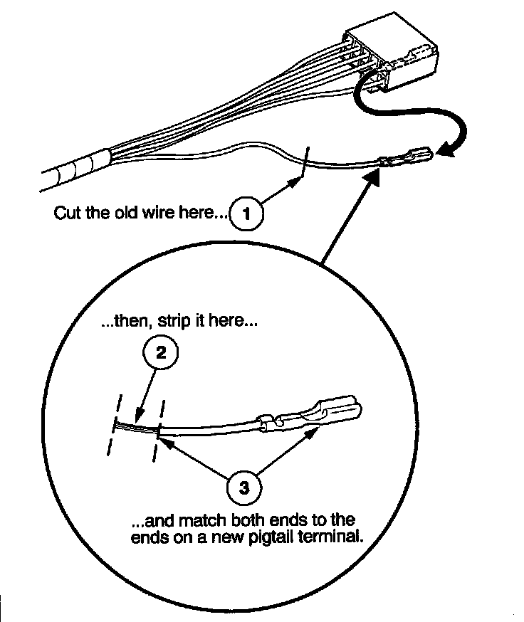
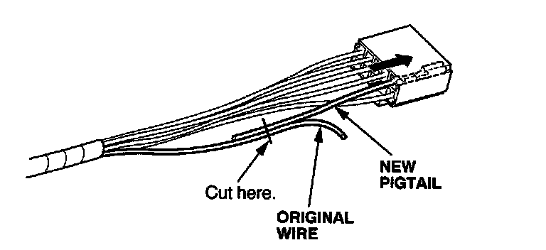
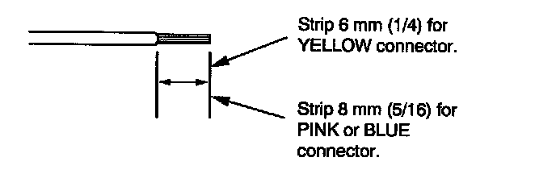
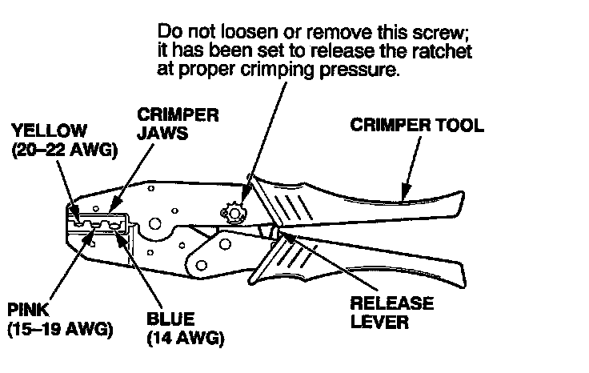
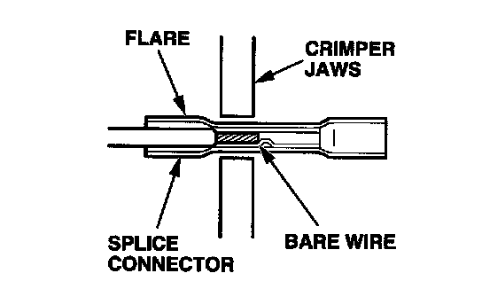
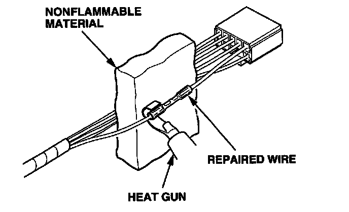
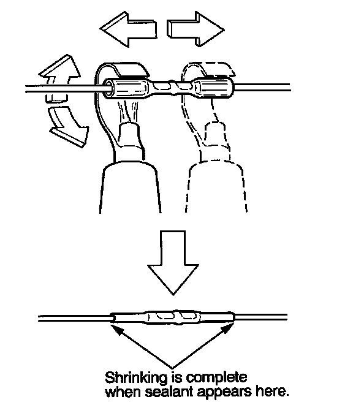

How to Install Pigtail Terminals
HOW TO INSTALL PIGTAIL TERMINALSPigtail terminals (short pieces of wire with a factory crimped terminal) are used when the wire is too short or when access to the connector is too restricted to make a terminal repair.
NOTE: To replace just a connector terminal, go to How to Replace Connector Terminals.
IMPORTANT SAFETY INFORMATION:
On some models, the SRS wires are in a separate harness. If the SRS harness is damaged, replace the harness; do not repair it. On other models, wire harnesses include yellow SRS wires. If any SRS wire is damaged, replace the entire harness; do not repair it.
1. Remove the damaged or faulty terminal from the connector. Use the proper removal tool from Pin Tool Set.
2. Cut off the wire about an inch back from where it connects to the damaged or faulty terminal, then strip about half of the insulation off that piece. This will be used to size the wire end of the replacement pigtail terminal.
NOTE: If you are not sure of the wire size, start with a large enough hole on the stripper that will not nick or cut off any strands of wires.

3. Select a pigtail terminal that matches the original wire at both ends (same kind of terminal and same diameter bare wire).
4. Select the smallest splice connector (yellow, pink, or blue) that will fit onto the stripped end of the original wire.
5. Insert the pigtail terminal into the connector cavity; push it in until it locks in place.

6. Lay the pigtail and the original wire side-by-side, and cut off both ends at once. If you are making more than one splice, do not cut each pigtail at the same location; the resulting "lump" of splice connectors would interfere with rewrapping the harness. Instead, cut the first pigtail close enough to the terminal so you will have room to make each remaining cut about 20 mm (3/4 inch) farther down on the next pigtail.
7. If you are using a yellow splice connector, strip about 6 mm (1/4 inch) of insulation off the ends of both wires. If you are using a pink or blue splice connector, strip off about 8 mm (5/16 inch) of insulation.
NOTE: If you nick or cut off any strands of wire, try again with the next larger size hole on the stripper.

8. Put the splice connector in the proper size slot in the Crimper Tool, slide it to one end (where the flare begins), and close the crimper handles far enough to hold it in place. To release the ratchet mechanism at any point after the first click, squeeze the handles slightly and push the release lever, then let the handles open.

9. Insert one of the bare wires into the splice connector end that is in the crimper jaws. Push the wire all the way into the splice connector, and squeeze the crimper handles. Keep squeezing until the jaws touch, and hold it at that position until the ratchet clicks again.

10. Crimp the other wire in the same way into the other end of the splice connector.
11. After crimping, gently pull on the wires in the opposite directions to make sure they are secure in the connector.
12. Separate the other wires in the harness from the repaired wire(s), and shield them with nonflammable material.

13. Plug in the heat gun, and turn it on. Start at the middle of the splice connector, and move the gun toward the ends as the tube shrinks. Apply heat evenly by rotating the curved heat spreader around the splice connector. Shrinking is complete when a small amount of sealant appears at each end of the tube.
NOTE: Be careful when working with the high heat produced by the heat gun.
